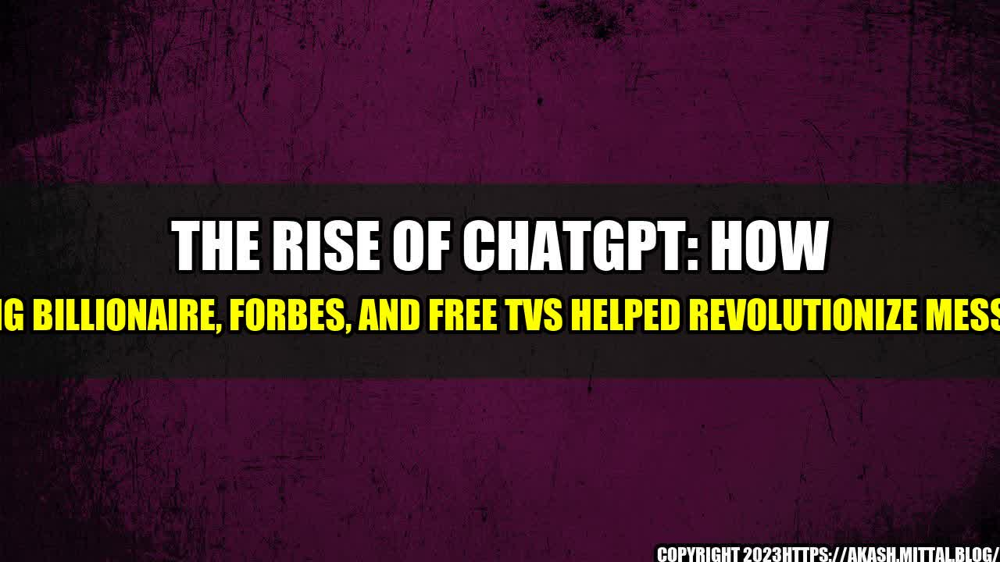

The Rise of ChatGPT: How a Young Billionaire, Forbes, and Free TVs Helped Revolutionize Messaging

It was the year 2017, and messaging platforms were a dime a dozen. From WhatsApp to Telegram, there seemed to be a messaging app for every person and every niche. However, a young billionaire had other ideas.
The Young Billionaire Buys Forbes
The young billionaire, whose name has been kept a secret, made headlines in November 2017 when he purchased Forbes, the renowned business media company. At just 28 years old, he had amassed a fortune through his investments in tech startups and had a vision for the future of online media.
He envisioned a world where people could access news and information for free, without any paywalls or subscriptions. He believed that quality journalism should be available to everyone, regardless of their financial situation. With Forbes now under his belt, he set his sights on his next venture.
A Startup Offers Free TVs
The billionaire invested in a new startup that offered free TVs to anyone who signed up for their messaging platform. This caught the attention of many people who were looking for a new messaging app to try out, as the promise of a free TV was too good to pass up.
The startup, called ChatGPT, had a unique selling point: it was designed to help users save time and be more productive. ChatGPT used artificial intelligence to create a chatbot that could understand natural language and provide helpful responses to users' questions and requests.
ChatGPT made it easy to set reminders, make reservations, and even order food directly within the app. Users were able to save time by not having to switch between multiple apps to accomplish different tasks. It was no surprise that ChatGPT quickly gained popularity among busy professionals, students, and anyone who wanted to be more efficient with their time.
ChatGPT Goes Mobile
A few months after its launch, ChatGPT went mobile. The startup released an app for both iOS and Android devices, making it even easier for people to use the platform on-the-go. With the convenience of a mobile app and the promise of a free TV, ChatGPT quickly became one of the most downloaded messaging apps of 2018.
ChatGPT's success was not just due to its unique features and free TVs. The billionaire's acquisition of Forbes also played a significant role. Forbes featured ChatGPT in several articles, which helped to increase its exposure and credibility. The messaging platform gained a reputation as a must-try app and was even featured on CNBC's "Disruptor 50" list.
Since then, ChatGPT has continued to grow and expand. The startup received additional funding from investors and has used that money to improve its AI chatbot and enhance its features. It has also partnered with several businesses and organizations to offer exclusive deals and discounts to its users.
The Impact of ChatGPT
The rise of ChatGPT has had a significant impact on the messaging industry and the tech industry as a whole. Here are three ways ChatGPT has changed the game:
- Efficiency: ChatGPT has made it easy for users to save time and be more productive by offering a variety of helpful features in one place. Its AI chatbot has become an invaluable tool for anyone looking to streamline their daily tasks.
- Accessibility: ChatGPT's free TVs and Forbes acquisition have helped to make the platform more accessible to a wider range of people. Its reputation as a reliable messaging app has also made it a popular choice for businesses and professionals.
- Innovation: ChatGPT's use of artificial intelligence and natural language processing has set it apart from other messaging platforms. Its ability to understand and respond to users' requests has made it one of the most advanced messaging apps on the market.
ChatGPT is a prime example of how innovative ideas and strategic acquisitions can lead to success in the tech industry. Its story is a reminder that the next big breakthrough could come from anywhere, and that the best way to stay ahead is to continue pushing the boundaries of what's possible.
Conclusion
ChatGPT's rise from a startup offering free TVs to one of the most popular messaging apps in the world is an inspiring story of innovation, accessibility, and efficiency. Its success is a testament to how a strategic acquisition and unique features can lead to explosive growth and widespread adoption.
As the tech industry continues to evolve, it's essential to keep an eye on startups like ChatGPT that are pushing the boundaries and challenging the status quo. Who knows what the next big breakthrough will be?
Curated by Team Akash.Mittal.Blog
Share on Twitter Share on LinkedIn